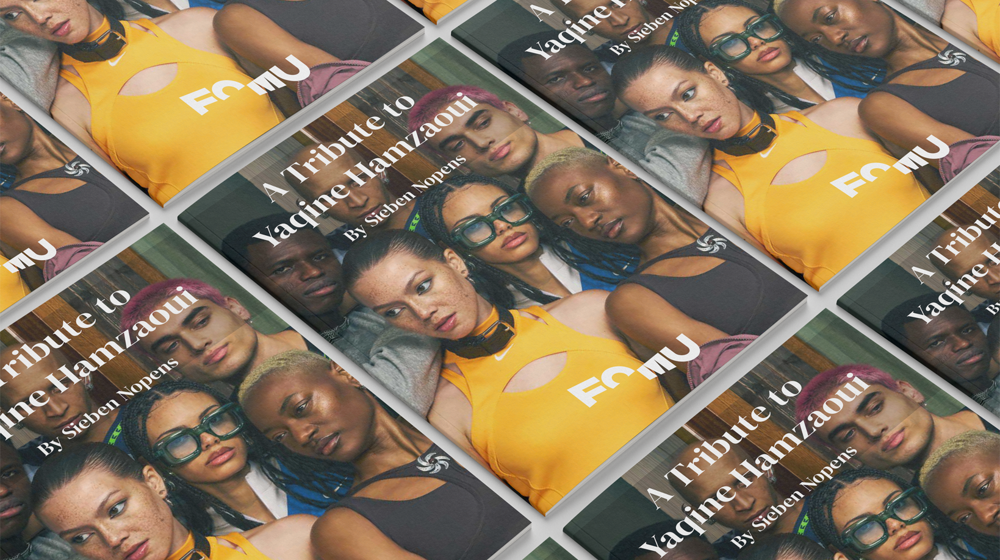

Project
For this project, I designed a photographic leporello inspired by the work of photographer Yaqine Hamzaoui, as part of a fictional exhibition concept for FOMU Antwerp. The goal was to explore visual contrasts through lines, combining original photography with editorial design.
I created a series of photographs focusing on contrasting elements such as composition, perspective and lighting. These images were brought together in a fold-out brochure, using typography, layout and visual hierarchy to create a cohesive narrative that unfolds across the different panels.
This project allowed me to further develop my skills in photography, photo editing and editorial design, while exploring how visual storytelling can translate into a physical printed format.
Visuals
A selection of visuals from the project.
